Лекар разобличава тайната за милиарди, която индустрията за отслабване не иска да знаете...
Лекар разкрива „Наръчника на индустрията за отслабване“ — и защо мазнината, която ви задъхва по стълбите, не се вижда в огледалото (и защо капсулите, шейковете и детокс чайовете изобщо не стигат до нея)
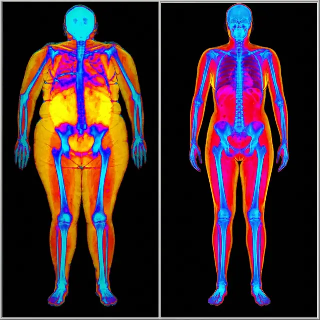
ВНИМАНИЕ: Тази статия не е за всеки. Ако сте над 40 и спирате по средата на стълбите „да си оправите торбите“, прочетете я до края.
На път съм да ядосам всеки производител на шейкове, детокс чайове и хапчета за отслабване в България.
Защото това, което ще споделя, може да им струва много пари.
Но вече не ме интересува.
След като години наред гледам жени в кабинета си да се разплакват, защото коремът не мърда, каквото и да правят…
След като слушам как пестят от храна, за да купят поредната „чудодейна“ добавка, която стомахът им връща…
След като виждам как спират да ходят на сватби, на море, на семейни снимки — защото се срамуват от тялото си…
Реших да кажа на глас това, което рядко се казва.
И ако четете това, докато спирате на площадката между втория и третия етаж, докато закопчавате панталона със задържан дъх, или докато се криете най-отзад на снимките…
Следващите 5 минути могат да променят начина, по който гледате на тялото си.
Казвам се д-р Георги Марков.
Всяка седмица в кабинета ми влизат жени на 45, на 50, на 55 с една и съща история.
И съм на път да разоблича мръсната тайна, която държи хиляди българки в капана на „от понеделник“ — докато индустрията за отслабване брои парите.
Но първо — нека ви разкажа за едно стълбище…
МОМЕНТЪТ, В КОЙТО ВСИЧКО СЕ ПРОМЕНИ...
Мария беше на 52. (Името е променено. Историята ѝ е история на десетки жени, които виждам в кабинета си.)
Беше сватбата на дъщеря ѝ. Залата — на втория етаж.
Всички се качваха, смееха се, снимаха се.
А тя спря по средата на стълбите. Уж да си оправи роклята. Всъщност — да си поеме въздух.
Фотографът я погледна и попита дали да ѝ донесе стол. Със същия тон, с който се говори на баба на 80.
Роклята — същата, която беше купила специално за този ден — я стягаше в талията. Цяла вечер беше прибирала корема.
На снимките застана най-отзад. Зад братовчедките. Зад децата.
Втори семеен празник за два месеца, на който се крие.
Когато ми го разказа, не плачеше. Беше по-лошо — говореше спокойно, сякаш е свикнала.
„Докторе, правя всичко както трябва. Защо не помага?“
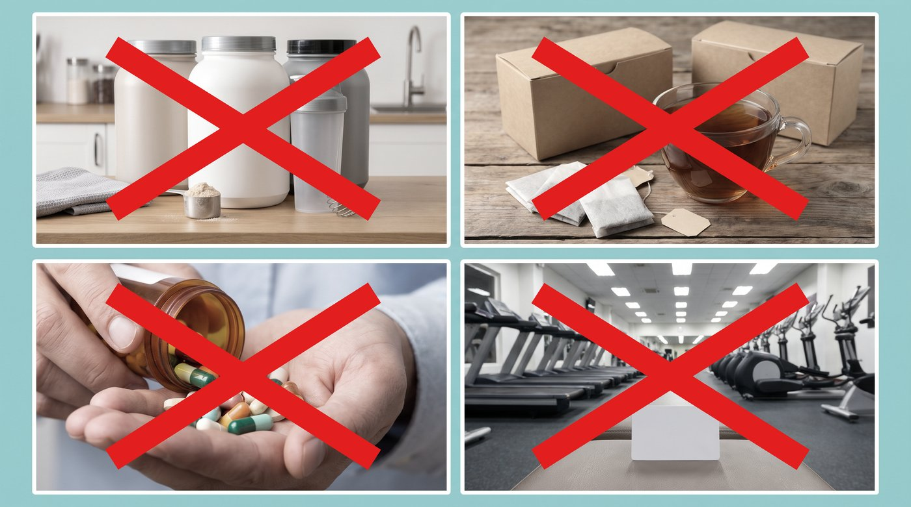
Беше опитала всичко, което ѝ бяха казвали:
- Диета на 1200 калории — Издържа три седмици. Вечер гладът я събаряше. Килограмите се върнаха, и то с бонус.
- Шейкове вместо вечеря — Месечна доставка. Гладна в 22:00. Отказа ги след два месеца.
- Детокс чайове — Пращаха я до тоалетната. Коремът си остана същият.
- Капсули с берберин — Подуване, тежест, запек. Спря ги след две седмици.
- Ябълков оцет на гладно — Киселини всяка сутрин. Нищо повече.
- Карта за фитнес — Плащана всеки месец. Три посещения.
Нищо не проработи за повече от няколко седмици.
„Специалистите“ не бяха по-полезни:
Навсякъде чуваше едно и също. „Възрастта е.“ „Раздвижи се малко.“ „Нормално е след 45.“
Някои ѝ предлагаха инжекциите за отслабване. Гадене сутрин, стотици евро на месец — и килограми, които се връщат, щом спреш.
Тя седеше срещу мен — жена, която цял живот се е грижила за всички, отгледала е две деца, работила е на две места — и се срамуваше да се качи по стълбите на сватбата на собствената си дъщеря.
Нещо в мен се пречупи.
Нямаше да гледам повече как жените в кабинета ми се превръщат в затворнички на собственото си тяло.
Нямаше да приема, че жена, която обичаше да танцува на сватби, сега стои най-отзад и брои стъпалата.
Щях да разбера защо.
ОТКРИТИЕТО, КОЕТО ОБЪРНА ВСИЧКО
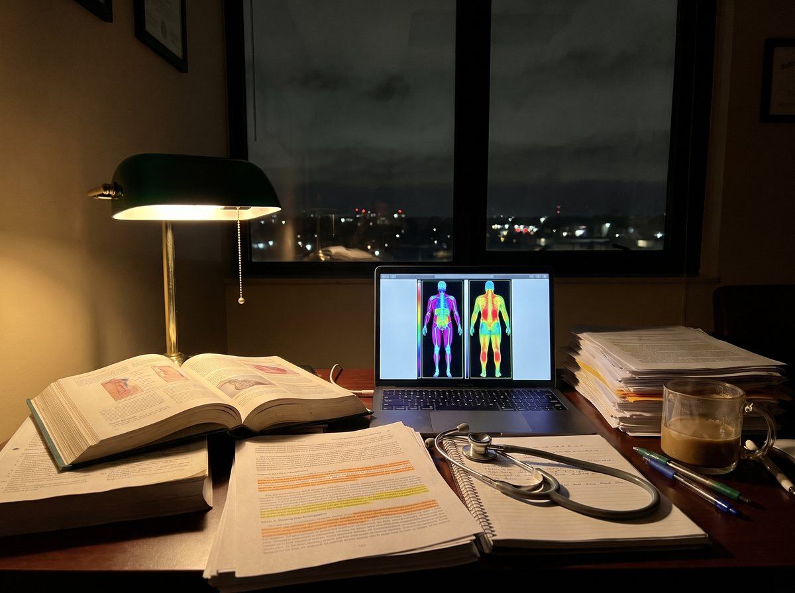
Седмици наред четох всичко, до което можех да стигна.
Проучвания. Мета-анализи. Скенери. Големите проучвания, които са проследили десетки хиляди жени в продължение на години.
И това, което открих, ме накара да искам да се извиня на всяка пациентка, на която съм казал просто „движете се повече“.
Цялата индустрия за отслабване е построена върху една удобна лъжа.
Лъжата, че вината е във вашите навици. Че всичко е въпрос на калории и воля.
Ето какво не искат да знаете:
Задъхването на третия етаж НЕ е „липса на кондиция“, която се оправя с още една диета.
То идва ОТВЪТРЕ — от мазнина, която огледалото не вижда и до която капсулите, шейковете и чайовете не стигат.
Казва се висцерална мазнина. Това не е мекото коремче, което хващате с два пръста. Тя е навътре — обвива черния дроб, стомаха и червата като дебело одеяло.

Кантарът не я вижда. Огледалото не я вижда. Вижда се само на скенер.
Затова учените им дадоха име: „слаби отвън, дебели отвътре“. Хора с „нормално“ тегло, които носят опасно много мазнина около органите.
Мазнината се е окопала около органите — а индустрията хвърля по нея шейкове и чайове.
ИСТИНСКАТА ПРИЧИНА ЗА ЗАДЪХВАНЕТО (КОЯТО КРИЯТ)
Нека го обясня така, че всеки да го разбере:
Представете си гърдите си като кутия, а белите дробове — като балон в нея.
Дъното на кутията е диафрагмата — мускулът, който слиза надолу всеки път, когато вдишвате, за да направи място на въздуха.
А сега си представете, че някой е натъпкал под дъното на кутията торба с мазнина.

Ето какво казва науката:
1. Мазнината около органите натиска диафрагмата.
Диафрагмата няма къде да слезе. Балонът не може да се напълни докрай. И тялото компенсира с по-бързо, по-плитко дишане. Затова третият етаж е като маратон.

2. Тя е жива, активна тъкан — и държи тялото в тихо възпаление.
Денонощно отделя в кръвта вещества, които поддържат възпаление — точно до сърцето, черния дроб и панкреаса. В проучване с 44 636 жени тези с талия над 88 см са имали 3 пъти по-висок риск от смърт от сърдечно заболяване — дори при нормално тегло.1
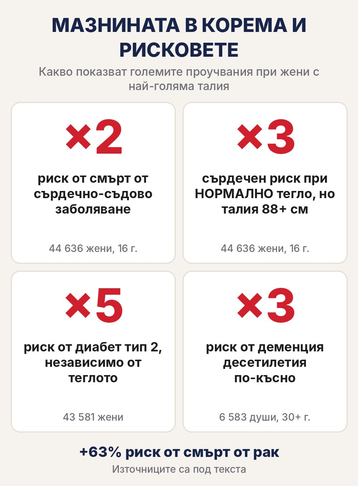
Проверка за 10 секунди: измерете талията си по средата между най-долното ребро и горния ръб на таза (горе-долу на нивото на пъпа). Според СЗО при жените над 80 см рискът е повишен, а над 88 см — значително повишен.2

3. След 40 хормоните я трупат точно там.
Когато естрогенът започне да спада, тялото на жената постепенно мести мазнината от бедрата и ханша към корема — и навътре, около органите. Затова толкова жени казват: „Ям както преди, а коремът расте.“
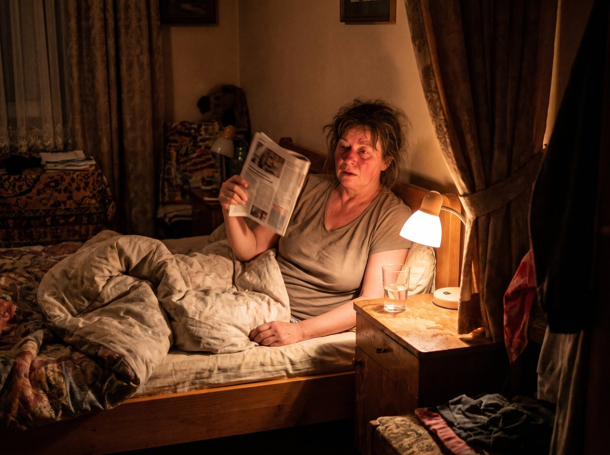
А хормонът на стреса, кортизолът, е свързан с трупането на мазнина точно в корема. Работа, сметки, деца, внуци, безсънни нощи — тялото живее в аларма и складира „за всеки случай“.

4. Тя не е еднократна бариера — трупа се всеки ден.
Във всяка клетка има нещо като метаболитен превключвател — учените го наричат AMPK. Когато е „изключен“, тялото предпочита да складира. А стресът, годините и заседналият живот го „приспиват“.
И ето я уловката:
Капсулите, които пиете, минават през грешната врата.
Всичко, което глътнете, минава през стомаха, червата и черния дроб. При берберина на капсули под 1% стига до кръвта.3 Останалото се губи по пътя.
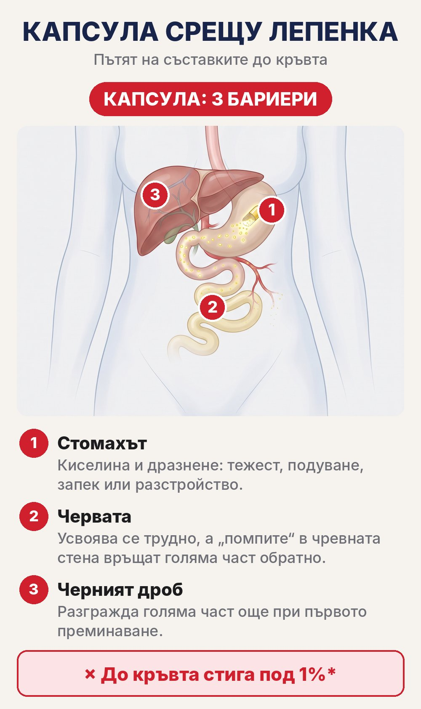
Знае се от години.
И продължават да ви продават капсули и шейкове.
Ето „Наръчника на индустрията за отслабване“:
Диета от понеделник → Шейк вместо вечеря → Детокс чай, който ви праща до тоалетната → Капсули, които подуват → Инжекции за стотици евро → Повторение, докато се откажете и приемете „възрастта“
Гениално, наистина.
Ако сте индустрия.
ВТОРАТА ВРАТА, СКРИТА ПРЕД ОЧИТЕ НИ
Помните ли Мария, която спря по средата на стълбите на сватбата?
Когато ѝ обясних втората врата, за първи път от месеци тя не попита „защо не помага“.
Попита „откъде да започна“.
За да започнете да работите срещу тази мазнина — а не само да я „боядисвате“ с поредната диета — трябва да направите ЕДНО нещо:
ДА ЗАОБИКОЛИТЕ СТОМАХА — и да подавате правилните съставки бавно, през целия ден.
Трябва ви нещо, създадено да:
- Заобикаля стомаха, червата и първото преминаване през черния дроб
- Подава съставките постепенно, от сутрин до вечер — не всичко наведнъж
- Носи берберина — веществото, което учените изследват заради метаболитния превключвател AMPK
- Не изисква гладуване, шейкове и гълтане на хапчета

И знаете ли какво?
Мета-анализи на рандомизирани проучвания показват, че съставките в тази формула намаляват обиколката на талията — берберинът средно с 2,75 см, канелата с 2,40 см.4,5
Това е мостът: ако науката показва какво могат съставките, защо продължавате да ги пращате през стомаха, където под 1% стига до кръвта?

ТОЗИ ПРОБИВ ВБЕСЯВА ИНДУСТРИЯТА ЗА ОТСЛАБВАНЕ
Докато индустрията ви продава поредния шейк, нещо друго се случва тихо.
Над 600 души от цяла България вече поръчаха FitPatches.
От София, Пловдив, Бургас и Варна… до Пазарджик, Хасково, Кюстендил, Враца и Айдемир.

Това са над 1 500 пакета. Или иначе казано — над 45 000 лепенки.
Няма да ви кажа колко килограма е свалил всеки от тях. При всеки е различно и не обичам да лъжа.
Но над 600 души решиха да спрат с „от понеделник“.
И да опитат през кожата, вместо пак през стомаха.
КОГАТО ЗАСЕГНЕШ ИНДУСТРИЯ ЗА МИЛИАРДИ, ПЪРВО ИДВАТ СЪМНЕНИЯТА
Първото, което ще чуете за лепенките, е:
„Лепенките са измама.“
Затова FitPatches не искат нито стотинка предварително. Поръчвате, пратката идва, плащате на куриера, когато е в ръцете ви. Ако беше измама, щяха да искат парите ви преди това.
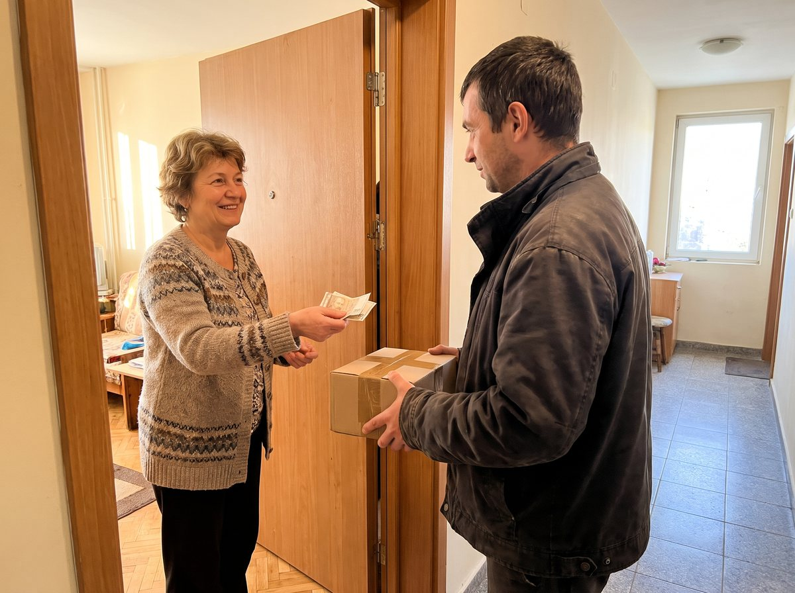
„Ще ти пратят обикновени пластири.“
Всяка лепенка FitPatches е розова, с размер на монета и с надпис „Fit Patches“ в кръг по ръба. Пълният състав е изписан на опаковката.
„Действа само там, където е залепена.“
Не. Не е крем за „топене“ на едно място. Лепенката е направена да подава съставките постепенно през целия ден — затова може на ръката, на корема или на бедрото.
Странно как никой от тях не говори за трите бариери на капсулата.
ЛЕПЕНКАТА, КОЯТО ПЛАШИ ИНДУСТРИЯТА ЗА ОТСЛАБВАНЕ
Казва се FitPatches.

Не е поредният шейк.
Не е детокс чай с хубав етикет.
Не е капсула, която стомахът връща.
Създадена е за мазнината, която огледалото не вижда.
Ето какво я прави различна:
ВТОРАТА ВРАТА — Не се гълта. Подава съставките през кожата, без да минават през стомаха, червата и първото преминаване през черния дроб.
БЕРБЕРИН — „Превключвателят“. Жълтото вещество от корена на киселия трън, изследвано заради метаболитния превключвател AMPK. В мета-анализ на 12 рандомизирани проучвания намалява теглото средно с 2,07 кг и маркера на възпалението CRP.6
КАНЕЛА — В мета-анализ на 12 рандомизирани проучвания с 786 души: −2,40 см талия и −1,02% телесни мазнини.5
ХРОМ — Минерал, който допринася за нормалния метаболизъм на макроелементите.
L-ГЛУТАМИН — В малко пилотно проучване талията на жени спада от 102,7 на 98,9 см за 4 седмици, без промяна в храненето.7
НАР — Сред най-богатите естествени източници на полифеноли.
ВИТАМИНИ ОТ ГРУПА B — Допринасят за нормалния енергиен метаболизъм и за намаляване на умората и отпадналостта.

Ето нещо, което повечето хора не разбират — и което ми се иска всяка пациентка да чуе от първия ден:
Мазнината около органите не се е натрупала за седмица. И не си отива за седмица.
Тя се трупа всеки ден — от годините, от стреса, от безсънието. Затова и помощта трябва да е всеки ден.
Една лепенка сутрин. Малко повече ходене. Повече сън. Постоянство.
Ето какво описват повечето хора:
Първите дни: Свиквате с лепенката — сутрин я залепвате и забравяте за нея. Някои усещат по-малко желание за сладко още тогава, други не.
Седмица 1–2: Много клиенти казват, че вечер посягат по-рядко към сладкото и хапват по-спокойно.
Седмица 3–4: Вече е навик. Добавете по 10 минути ходене на ден — и стълбите вместо асансьора.
Седмица 4–8: Тук много жени започват да виждат промяна — в колана, в дрехите, в стълбите. При всеки е различно.
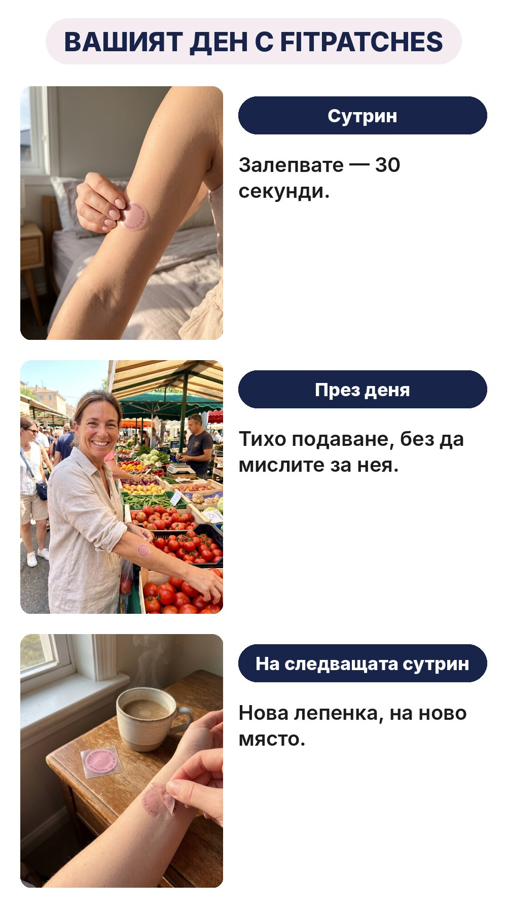
ЦИФРИТЕ, КОИТО НЕ МОГАТ ДА ИГНОРИРАТ
За последната година:
- над 600 клиенти от цяла България
- 1 584 пакета
- 47 520 лепенки
А ето какво показват големите проучвания:
ЦЕНАТА, КОЯТО ПРЕДИЗВИКВА ПАНИКА
Нека ви покажа колко РЕАЛНО струва „правенето на всичко както трябва“ в България (приблизително):
Маршрутът „Фитнес + шейкове“:
- Карта за фитнес: 30–60 € × 12 = 360–720 €/година
- Шейкове и заместители: 30–50 € × 12 = 360–600 €/година
- Общо: до 1 320 € — за три посещения и гладни вечери
Маршрутът „Аптеката“:
- Детокс чайове и хапчета от рекламите: 240–480 €/година
- Капсули, които спирате след две седмици: още стотици евро
Маршрутът „Инжекции“:
- Стотици евро на месец
- Гадене сутрин
- Килограмите се връщат, щом спрете
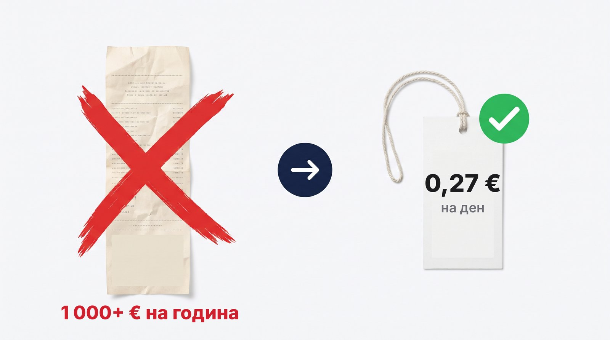
Индустрията ОБОЖАВА тези маршрути.
Знаете ли защо?
Защото се връщате.
Всеки януари. Всеки понеделник. Вие не сте клиент — вие сте абонамент.
ЦЕНАТА „СРЕДЕН ПРЪСТ“ ЗА ИНДУСТРИЯТА: −50%
Редовната цена на един пакет FitPatches е 29,99 €.
Днес е 14,99 € — 30 лепенки, точно за един месец. Това е 0,50 € на ден.

При 2 + 1 подарък: 27,99 € за три месеца — 0,31 € на ден.
При 3 + 2 подарък: 39,99 € за пет месеца — 0,27 € на ден.
По-малко от един месец фитнес.
По-малко от една кутия шейкове.
По-малко от едно кафе на ден.
ПРОВЕРЕТЕ НАЛИЧНОСТТА⚠️ НО ЕТО ГОРЧИВАТА ИСТИНА
От Никулден до Йордановден са 32 дни трапези. Шаран. Сарми. Баница. Козунак. Тава след тава.
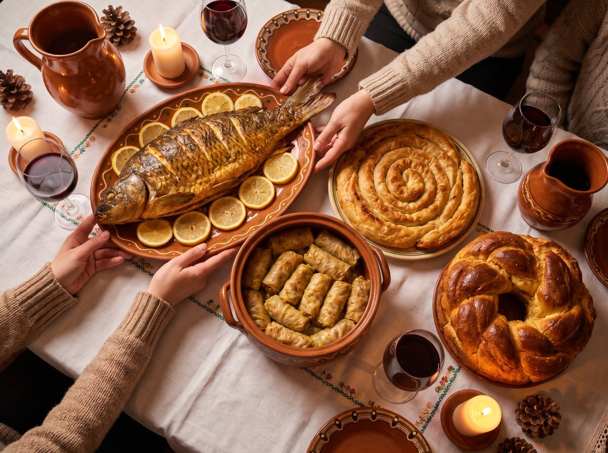
Повечето хора ще си кажат: „Ще започна след празниците.“
И ще посрещнат януари на същата площадка — само с още малко мазнина там, където огледалото не стига.
Ако поръчате днес, до празниците ще имате няколко седмици навик.
Направете сметката.
МОЯТА ЛИЧНА ГАРАНЦИЯ: НЕ ДАВАТЕ НИЩО ПРЕДВАРИТЕЛНО
Вижте, разбирам ви.
Лъгани сте преди. Всички сме били.
Плащали сте предварително за диети, шейкове и „чудодейни“ хапчета, които свършиха в шкафа.
Затова ето обещанието — и го пиша черно на бяло:
Няма предплащане. Поръчвате. Пратката идва. Плащате на куриера, когато е в ръцете ви.
Няма абонамент. Плащате веднъж за това, което поръчате. Без автоматични плащания.
Няма обещания за килограми. Само постоянство и честност.

Пробвайте един пакет. Ако след месец не усетите разлика — просто не поръчвате пак.
РЕШЕНИЕТО, КОЕТО ЩЕ ОПРЕДЕЛИ СЛЕДВАЩОТО ВИ ДЕСЕТИЛЕТИЕ
В момента сте на кръстопът.
Път №1: Продължете както досега
Продължете да купувате капсули, които стомахът ви връща.
Продължете да спирате на площадката „да си оправите торбите“.
Продължете да заставате най-отзад на снимките, на сватбите, на рождените дни.
След 10 години ще сте на същата площадка — с по-тежки торби и по-тежко дишане.
Път №2: Опитайте нещо, което заобикаля стомаха
Струва по-малко от кафе на ден.
Над 600 души в България вече минаха през втората врата.
Атакувайте ИСТИНСКАТА ПРИЧИНА — мазнината, която огледалото не вижда.
Събудете се утре готови за стълбите, вместо готови да се криете.

Мисля, че знаете кой път води до следващата семейна снимка — най-отпред.
ЕТО ТОЧНО КАКВО СЛЕДВА
Стъпка 1: Натиснете зеления бутон „ПРОВЕРЕТЕ НАЛИЧНОСТТА“.
Стъпка 2: Изберете пакет:
→ 3 + 2 ПОДАРЪК — 39,99 € (0,27 € на ден). Пет месеца — достатъчно, за да превърнете лепенката в навик.
2 + 1 ПОДАРЪК — 27,99 € (0,31 € на ден). Три месеца.
1 ПАКЕТ — 14,99 € (0,50 € на ден). Един месец, за да пробвате.
Стъпка 3: Попълнете име, телефон и адрес — ще ви се обадят за потвърждение.
Стъпка 4: Изчакайте 2–4 работни дни. Пратката идва с Еконт до адрес или офис.
Стъпка 5: Платете на куриера, когато е в ръцете ви.
Стъпка 6: Още на следващата сутрин залепете първата лепенка. Не чакайте понеделник.
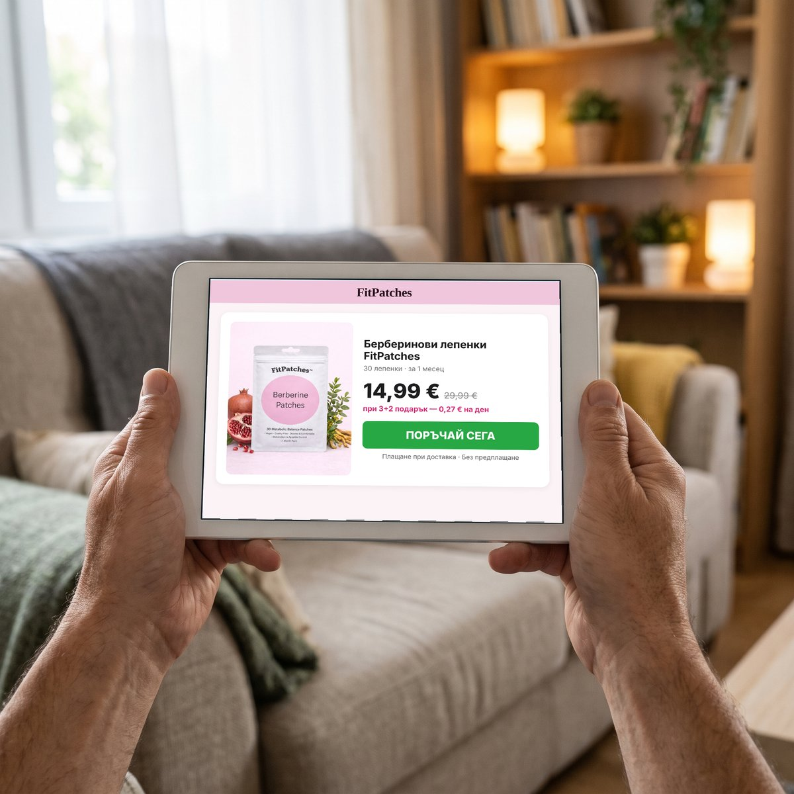
Но каквото и да правите, не затваряйте тази страница с мисълта „ще видя по-късно“.
„По-късно“ е още една площадка.
„По-късно“ е още една сватба, на която стоите най-отзад.
„По-късно“ е още едни празници, след които „ще започнете“.
Тялото ви е чакало достатъчно.
Стълбите са чакали достатъчно.
Решението е на едно кликване.
ПРОВЕРЕТЕ НАЛИЧНОСТТА [→ ПРОВЕРЕТЕ НАЛИЧНОСТТА — ПЛАЩАТЕ ПРИ ПОЛУЧАВАНЕ]С пожелание за свобода от „от понеделник“,Д-р Георги Марков
P.S. — Следващия път, когато спрете на площадката, спомнете си балона в кутията. Не е мързел. Не е само възрастта. Това е мазнина — там, където огледалото не стига. И с нея може да се работи.
P.P.S. — Никой не ви иска нищо предварително. Плащате на куриера, когато пратката е в ръцете ви. Единственото, което рискувате, е още една зима на стълбите.
P.P.P.S. — Най-честата грешка, която виждам: хората слагат лепенката две седмици, не виждат чудо и спират. Мазнината около органите не се е натрупала за две седмици. Дайте ѝ поне 4–8 седмици — една лепенка сутрин и малко повече ходене.
[→ ПРОВЕРЕТЕ НАЛИЧНОСТТА — 14,99 € ВМЕСТО 29,99 €]Източници: 1. Zhang и съавт., Circulation, 2008. 2. СЗО, Waist circumference and waist–hip ratio, 2008. 3. Liu и съавт., Fitoterapia, 2016. 4. Xiong и съавт., Complementary Therapies in Clinical Practice, 2020. 5. Mousavi и съавт., Clinical Nutrition, 2020. 6. Asbaghi и съавт., Clinical Nutrition ESPEN, 2020. 7. Laviano и съавт., European Journal of Clinical Nutrition, 2014.
ТОВА Е РЕКЛАМА И НЕ Е НОВИНАРСКА СТАТИЯ. Материалът е подготвен за FitPatches с участието на д-р Георги Марков. Историята на „Мария“ е обобщена от случаи от практиката; името е променено.
FitPatches не е лекарствен продукт и не е предназначен за диагностика, лечение или предотвратяване на заболявания. Не замества разнообразното и балансирано хранене, здравословния начин на живот и медицинската консултация. Резултатите са индивидуални. Снимките са с илюстративна цел. Цитираните проучвания за рисковете описват връзката между мазнината в корема и здравето; проучванията за съставките са с прием през устата и не са правени с FitPatches. Задъхването може да е симптом на сърдечно или белодробно заболяване — ако е ново, внезапно или се засилва, потърсете лекар. При бременност, кърмене или прием на лекарства се консултирайте с лекар преди употреба.